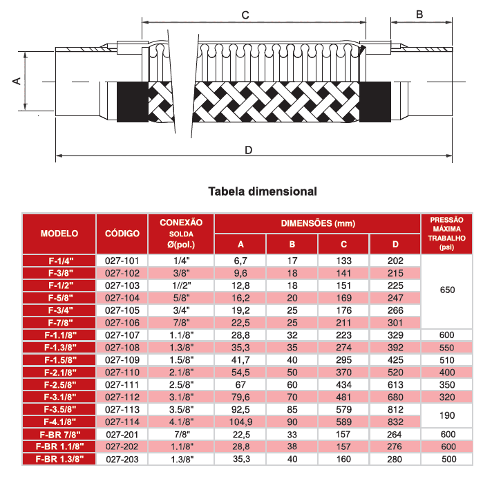

- Utilizado na linha de descarga e sucção em sistemas de refrigeração e ar condicionado com refrigerantes CFC-HCFC-HFC em conformidade com a pressão máxima de trabalho (vide tabela), e onde se fizer necessária a movimentção do compressor.
- Pressão máxima de trabalho: vide tabela dimensional.
- Temperatura de trabalho: -40C a 130C.
- Absorve a propagação das vibrações do compressor transmitida a tubulação e componentes, reduzindo trincas e ruídos. Absorve dilatação ou contração da tubulação.
- Tubo sanfonado de luva (aço inox) soldados pelo processo TIG.
- Malha trançada em aço inox fixada à luva por anel prensado
